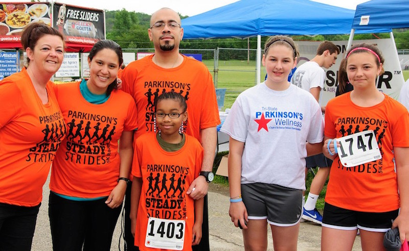
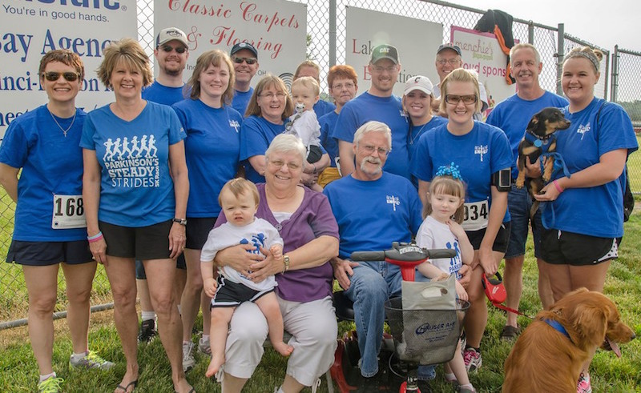

Help us raise $120,000 in 2015!
Help Persons with Parkinson's and their families to live well!
 Your participation in the Steady Strides 5k race for Parkinson's means that you will be supporting programs, services and research to help those living with Parkinson's live well.
The Parkinson's Wellness Chapter of the APDA (American Parkinson's Disease Association) exists to provide programs and services that truly "ease the burden" of Parkinson's. Your donations will go directly to programs that make a positive impact on the lives of people with Parkinson's, their caregivers, families and loved ones. A portion of the proceeds raised also goes toward research to find the cure for PD.
We invite you to join us for this great event that celebrates all the strides we're making together to end PD!
Please note, photos are available for free download, and prints are available for purchase. Our race day photographers, Dynamic Focus, have agreed to donate 50% of all sales of prints from the event to the Chapter!